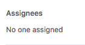
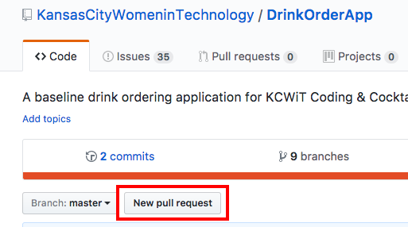

Part 6: Branching and the Art of Collaboration
Now we are going to collaborate on a very simple web application.
In Google Chrome, navigate to https://github.com/KansasCityWomeninTechnology/DrinkOrderApp.
Click on the issues tab at the top.
Look through the list of issues for one that does not yet have a comment icon on the right side: .
Click on the issue to open it and at the bottom, add a comment saying the issue is assigned to you. For example, "This issue is assigned to @codingandcocktails." Replace codingandcocktails with your own GitHub username, leaving the @ symbol to tag yourself. Make note of the issue number to use in step 8.
You may see development teams assign work via the "Assignee" option on the upper right corner of the issue.

We are not using that option to simplify user management tonight.
Fork the repository.
If you need a refresher on how to fork a repository go back to Part 5: Forking.
In Git Bash or iTerm2 make sure you are in your VersionControl directory. If you are anywhere else change directories to the VersionControl directory.
Clone the forked repository and
cdinto it.Using the issue number from step 4, we will now make a new branch. In Git Bash or iTerm2, type
git checkout -b issue-##to do this replacing ## with your issue number.If you are working on issue #9, your branch name would be issue-09.
To view all branches within the repo, type
git branch. This should show you at least two branches - master, and the issue-## branch you just created. The branch you are currently working in will be highlighted with an asterisk (*).To switch between branches type
git checkout branchnamereplacing the text "branchname" with the branch you'd like to switch to. For example if you want to switch to the "development" branch you'd typegit checkout development.In Git Bash or iTerm2 type
atom .. This will open your Atom text editor with the context of the current directory.Make changes to the application as instructed in your issue and make sure to save any files you change.
After you've saved your files, in Git Bash or iTerm2, type
git statusto view which files you've changed.If everything looks good, stage and commit your changes. Type
git push origin <branchname>to push to the branch you made to your remote fork, substituting your own branch name for the angle brackets and "branchname" text. Now you have pushed your changes to the origin (that is, to the cloud), to your specific branch.Create a pull request to migrate your changes from the fork and branch you have been working on to the Kansas City Women in Technology repository.
In Google Chrome, navigate to https://github.com/KansasCityWomeninTechnology/DrinkOrderApp and click on the New Pull Request button.

Click the "compare across forks" link at the end of the text "Compare changes across branches, commits, tags, and more below. If you need to, you can also compare across forks."
Keep the "base fork" (organization where you are moving your changes TO) as KansasCityWomeninTechnology
- Change the "base" (the branch within the organization you selected to move your changes TO) as "vc-final".
Change the "head fork" (User that you're moving changes FROM) to yourGitHubusername/DrinkOrderApp
Change the "compare" to the issue-## branch you created in step 7.
Feel free to add any comments you'd like. If you keep scrolling down you'll see the commits you added to make the change along with the diff across the file(s) you changed.
Click on the Green "Create pull request" button.
If Git detects no conflicts, it will give you a checkmarked message saying “able to merge.”
If Git detects conflicts, it will display a red message saying "Can't automatically merge."
Typically someone or a group of people have oversight into merging the pull requests into the upstream repository (where you forked from) to become the final version of the code. Once your pull request is accepted by this person, you can view your code in the final destination, along with all of the changes your peers have made.
We will work on getting PR's (aka Pull Requests) merged as we are able!
Congratulations! You’ve collaborated on a project for the first time!